“La photographie est l’expression d’émotions par la recherche d’un certain minimalisme”

En 2014, Frédéric Ducos a choisi de quitter le milieu du vin pour rejoindre celui de la photographie. Une reconversion, on peut le dire, réussie ! En effet, quelques années plus tard, il remporte le Umbra International Photography Awards, un concours de renommée mondiale. Pourtant, à première vue, le pari était risqué. N’ayant jamais touché à un appareil, Frédéric a pris ses premiers cours de photographie sur la place de la Bourse à Bordeaux. Ce fut un réel déclic qui lui a donné envie de se lancer pleinement dans le domaine. Un an et demi après, il s’installe en tant qu’artiste-photographe. Aujourd’hui, âgé de 44 ans, il vit de sa passion.